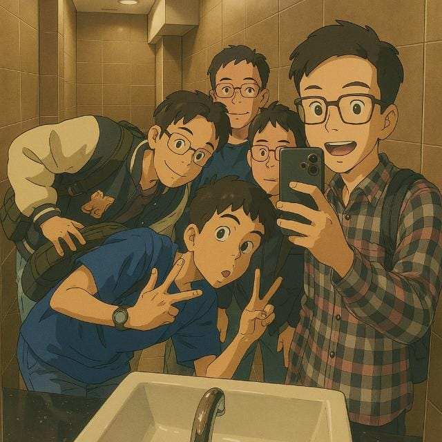

61.506rekaman chat
5anggota utama
116foto memori bersama
07.03.24awal arsip grup
Our members
Orang-orangnya.
Klik profil anggota untuk membuka halaman pribadi. Foto bersama tidak ditag ke profil dan tetap berada khusus di Memory Gallery.

Memory Gallery
Foto bersama, satu tempat.
Galeri berisi foto kenangan bersama dalam satu tampilan yang rapi, ringan, dan animatif. Profil pribadi tetap terpisah dari kumpulan foto bersama.
Group history
Riwayat grup.
Riwayat perubahan nama tetap disimpan sebagai bagian dari arsip grup, terpisah dari Memory Gallery.
PEJANTAN TANGGUH 💪⚡
Arsip sejak 7 Maret 2024.
Chat tersusun berdasarkan tanggal, jam, pengirim, dan isi pesan. POV dapat diganti tanpa mengubah data asli percakapan.
Rename history
07 Mar 2024
Icikiwir all in bantai isriwil → Wira VS EVERYBODY
Icikiwir all in bantai isriwil → Wira VS EVERYBODY
03 May 2024
Wira VS EVERYBODY → Otw pmgc
Wira VS EVERYBODY → Otw pmgc
29 Sep 2024
Otw pmgc → Sentot genk👺
Otw pmgc → Sentot genk👺
29 Sep 2024
Sentot genk👺 → PEJANTAN TANGGUH 💪⚡
Sentot genk👺 → PEJANTAN TANGGUH 💪⚡
Chat archive
Seperti buka WhatsApp lama.
Masuk ke chat terbaru, scroll ke atas untuk memuat pesan lama, cari isi percakapan, gunakan filter, dan pilih POV anggota untuk menentukan bubble kanan.

PEJANTAN TANGGUH 💪⚡61.506 rekaman • POV Andrea